Forskuddstrekk er et system hvor arbeidsgivere trekker skatt fra ansattes lønn før utbetaling, og sender denne skatten direkte til Skatteetaten på vegne av den ansatte. Dette systemet sikrer at arbeidstakere betaler skatt løpende gjennom året, i stedet for å måtte betale hele skatten på en gang ved årets slutt. Forskuddstrekk er en fundamental del av det norske skattesystemet og påvirker både arbeidsgivere og arbeidstakere.
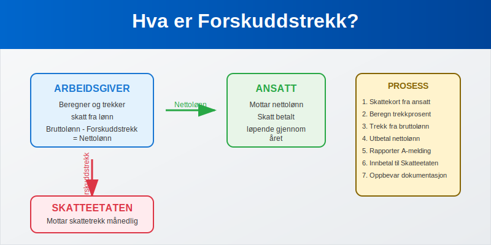
Seksjon 1: Grunnleggende om Forskuddstrekk
1.1 Hva er Forskuddstrekk?
Forskuddstrekk er skattetrekk i lønn som arbeidsgivere foretar på vegne av Skatteetaten. Systemet fungerer som en forskuddsinnbetaling av den ansattes årlige skatteplikt, hvor skatten trekkes fra bruttolønnen før nettolønnen utbetales til den ansatte.
Hovedformålet med forskuddstrekk er å:
- Sikre jevn skatteinnbetaling gjennom året
- Redusere risikoen for store skatteoppgjør
- Forenkle skatteinnkrevingen for staten
- Gi forutsigbarhet for både arbeidstaker og arbeidsgiver
1.2 Lovgrunnlag og Regulering
Forskuddstrekk er regulert i skatteloven og forskuddstrekkloven, og administreres av Skatteetaten. Systemet er obligatorisk for alle arbeidsgivere som utbetaler lønn til ansatte i Norge.
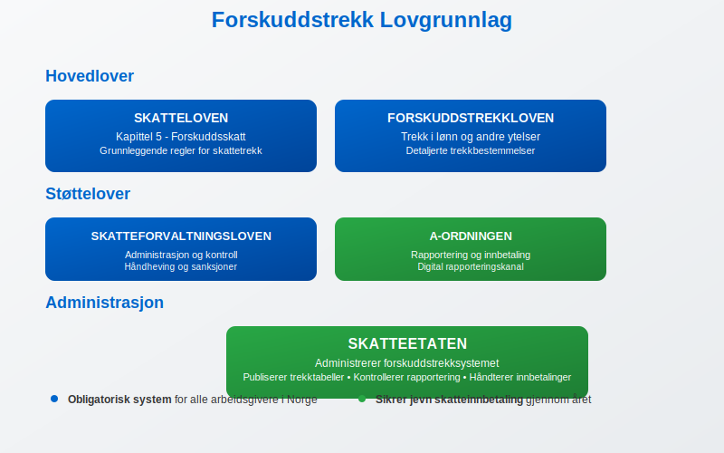
Viktige lovbestemmelser:
- Skatteloven kapittel 5 - Forskuddsskatt
- Forskuddstrekkloven - Trekk i lønn og andre ytelser
- Skatteforvaltningsloven - Administrasjon og kontroll
- A-ordningen - Rapportering og innbetaling
Seksjon 2: Trekkgrunnlag og Beregning
2.1 Hva Inngår i Trekkgrunnlaget?
Forskuddstrekk beregnes av den skattepliktige lønnen og andre ytelser som arbeidsgiver utbetaler:
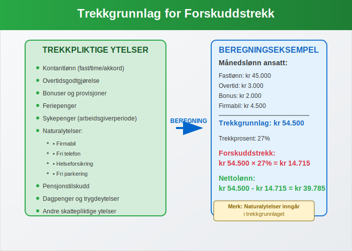
Trekkpliktige ytelser:
- Kontantlønn (fastlønn, timelønn, overtidsbetaling)
- Bonuser og provisjoner
- Feriepenger
- Sykepenger fra arbeidsgiver
- Naturalytelser (firmabil, fri telefon, etc.)
- Pensjonsutbetalinger
- Dagpenger og andre trygdeytelser
2.2 Trekktabeller og Trekkprosent
Skatteetaten publiserer årlige trekktabeller som viser hvor mye som skal trekkes basert på lønnsnivå og skattekortet til den ansatte.
| Månedslønn | Trekkprosent (standard) | Trekk per måned |
|---|---|---|
| kr 30.000 | 22% | kr 6.600 |
| kr 40.000 | 25% | kr 10.000 |
| kr 50.000 | 27% | kr 13.500 |
| kr 60.000 | 29% | kr 17.400 |
| kr 70.000 | 31% | kr 21.700 |
| kr 80.000 | 33% | kr 26.400 |
Tabellen viser eksempler basert på standard skattefradrag. Faktisk trekk kan variere basert på individuelt skattekort.
2.3 Skattekortet og Trekkprosent
Den ansattes skattekort bestemmer trekkprosenten som skal anvendes. Skattekortet inneholder informasjon om:
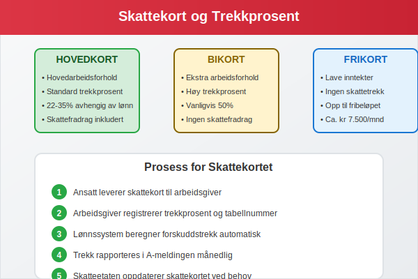
- Hovedkort - For hovedarbeidsforholdet
- Bikort - For ekstra inntekter (høyere trekkprosent)
- Frikort - For inntekter under fribeløpet
- Trekkprosent - Individuell prosentsats
- Tabellnummer - Referanse til trekktabell
Seksjon 3: Praktisk Håndtering av Forskuddstrekk
3.1 Arbeidsgivers Ansvar og Plikter
Arbeidsgivere har omfattende ansvar og plikter knyttet til forskuddstrekk:
Hovedplikter:
- Innhente gyldig skattekort fra alle ansatte
- Beregne korrekt forskuddstrekk basert på skattekortet
- Trekke skatten fra lønnen før utbetaling
- Rapportere og innbetale trekket til Skatteetaten
- Oppbevare dokumentasjon i henhold til bokføringsloven
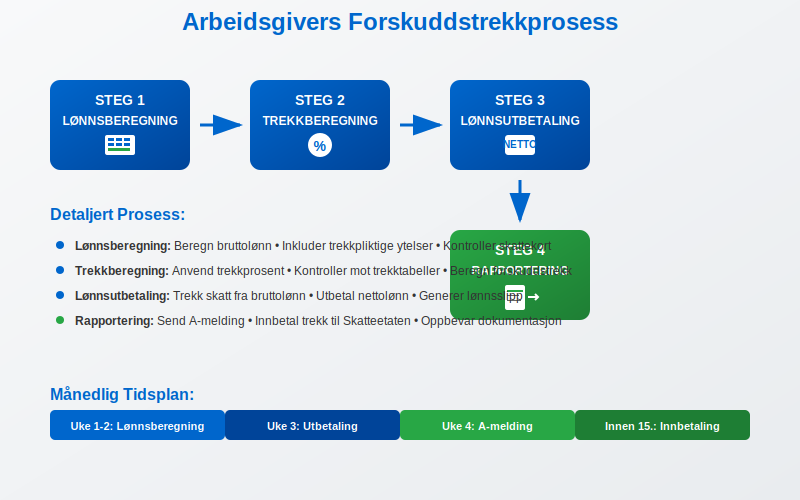
3.2 Månedlig Prosess
Den månedlige håndteringen av forskuddstrekk følger en fast prosess:
Steg 1: Lønnsberegning
- Beregn bruttolønn for alle ansatte
- Inkluder alle trekkpliktige ytelser
- Kontroller at skattekortet er oppdatert
Steg 2: Trekkberegning
- Anvend korrekt trekkprosent fra skattekortet
- Beregn forskuddstrekk basert på trekkgrunnlaget
- Kontroller beregningene mot trekktabellene
Steg 3: Lønnsutbetaling
- Trekk forskuddstrekket fra bruttolønnen
- Utbetal nettolønnen til den ansatte
- Generer lønnsslipp med detaljert oversikt
Steg 4: Rapportering
- Rapporter gjennom A-meldingen
- Innbetal trekket til Skatteetaten
- Oppbevar dokumentasjon
3.3 Beregningseksempler
La oss se på konkrete eksempler på forskuddstrekkberegning:
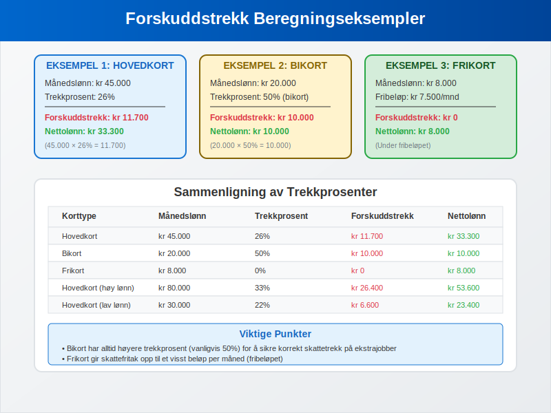
Eksempel 1: Standard ansatt med hovedkort
- Månedslønn: kr 45.000
- Trekkprosent: 26%
- Forskuddstrekk: kr 45.000 × 26% = kr 11.700
- Nettolønn: kr 45.000 - kr 11.700 = kr 33.300
Eksempel 2: Ansatt med bikort
- Månedslønn: kr 20.000 (ekstrajobb)
- Trekkprosent: 50% (bikort)
- Forskuddstrekk: kr 20.000 × 50% = kr 10.000
- Nettolønn: kr 20.000 - kr 10.000 = kr 10.000
Eksempel 3: Ansatt med frikort
- Månedslønn: kr 8.000
- Fribeløp: kr 7.500 per måned
- Forskuddstrekk: kr 0 (under fribeløpet)
- Nettolønn: kr 8.000
Seksjon 4: Rapportering og A-meldingen
4.1 A-meldingen som Rapporteringskanal
Forskuddstrekk rapporteres månedlig gjennom A-meldingen, som er den digitale kanalen for rapportering av lønn og trekk til myndighetene.
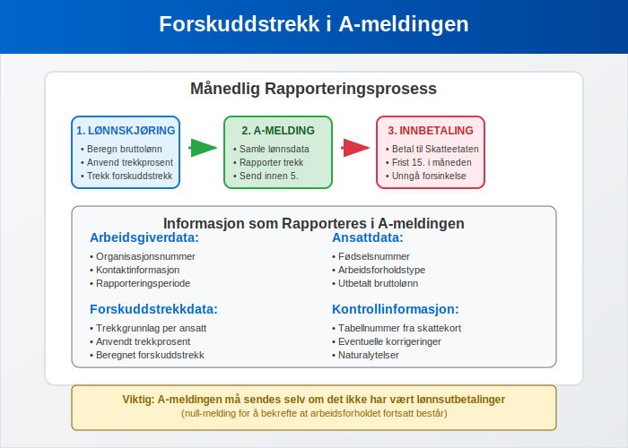
Informasjon som rapporteres:
- Identifikasjon av arbeidsgiver og arbeidstaker
- Utbetalt bruttolønn per måned
- Beregnet og trukket forskuddstrekk
- Trekkgrunnlag og trekkprosent
- Eventuelle korrigeringer fra tidligere måneder
4.2 Frister og Innbetaling
| Måned | Rapporteringsfrist A-melding | Innbetalingsfrist |
|---|---|---|
| Januar | 5. februar | 15. februar |
| Februar | 5. mars | 15. mars |
| Mars | 5. april | 15. april |
| April | 5. mai | 15. mai |
| Mai | 5. juni | 15. juni |
| Juni | 5. juli | 15. juli |
Hvis fristen faller på helg eller helligdag, flyttes den til neste virkedag.
4.3 Konsekvenser ved Feil Rapportering
Mulige sanksjoner:
- Forsinkelsesrenter ved for sen innbetaling
- Tilleggsavgift ved feil rapportering
- Gebyr for manglende eller feil A-melding
- Straffansvar ved grov uaktsomhet eller forsett
Seksjon 5: Spesielle Situasjoner og Unntak
5.1 Utenlandske Arbeidstakere
Forskuddstrekk for utenlandske arbeidstakere har spesielle regler avhengig av skatteposisjon:
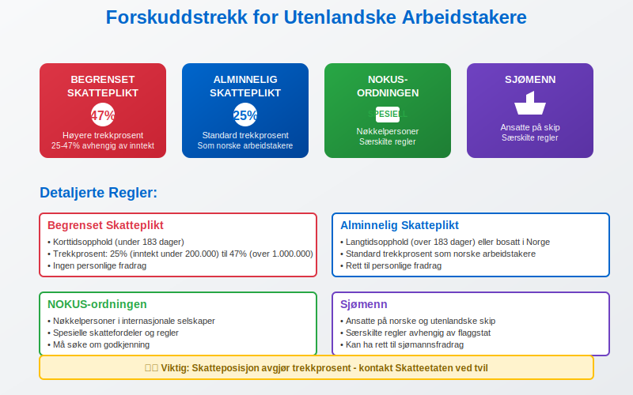
Kategorier:
- Begrenset skatteplikt - Høyere trekkprosent (25-47%)
- Alminnelig skatteplikt - Standard trekkprosent
- NOKUS-ordningen - Spesielle regler for nøkkelpersoner
- Sjømenn - Særskilte regler for ansatte på skip
5.2 Naturalytelser og Fordeler
Forskuddstrekk skal også beregnes av naturalytelser og andre fordeler:
| Type naturalytelse | Verdsettelse | Trekkbehandling |
|---|---|---|
| Firmabil | Listepris × 30% | Trekkpliktig |
| Fri telefon | Markedsverdi | Trekkpliktig |
| Subsidiert kantine | Fordelsverdi | Trekkpliktig |
| Fri parkering | Markedsverdi | Trekkpliktig |
| Helseforsikring | Premie | Trekkpliktig |
5.3 Feriepenger og Forskuddstrekk
Feriepenger har spesielle regler for forskuddstrekk:
For mer informasjon om skattebehandling av feriepenger, se Skatt på feriepenger.
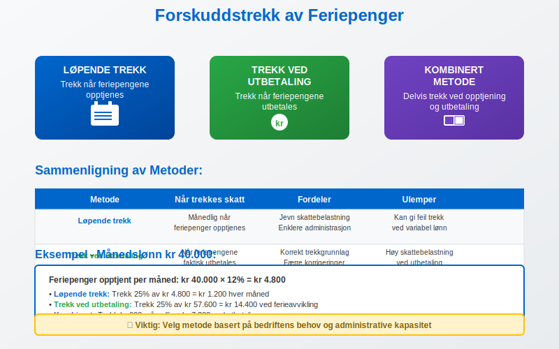
Trekkmetoder:
- Løpende trekk - Trekk når feriepengene opptjenes
- Trekk ved utbetaling - Trekk når feriepengene utbetales
- Kombinert metode - Delvis trekk ved opptjening og utbetaling
Seksjon 6: Regnskapsføring av Forskuddstrekk
6.1 Bokføring av Lønnskostnader
Forskuddstrekk påvirker regnskapsføringen av lønnskostnader:
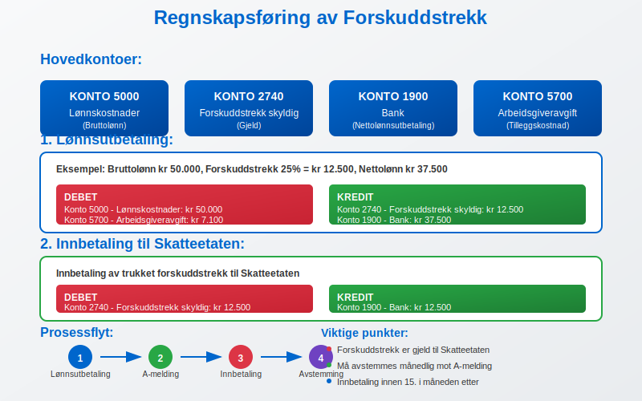
Typiske kontoer:
- Konto 5000 - Lønnskostnader (bruttolønn)
- Konto 2740 - Forskuddstrekk skyldig (gjeld)
- Konto 1900 - Bank (nettolønnsutbetaling)
- Konto 5700 - Arbeidsgiveravgift
6.2 Eksempel på Bokføring
Lønnsutbetaling:
Debet: Lønnskostnader kr 50.000
Kredit: Forskuddstrekk skyldig kr 12.500
Kredit: Bank kr 37.500
Innbetaling til Skatteetaten:
Debet: Forskuddstrekk skyldig kr 12.500
Kredit: Bank kr 12.500
6.3 Årsoppgjør og Avstemming
Ved årsoppgjøret må forskuddstrekk avstemmes mot:
- Innbetalte beløp til Skatteetaten
- Rapporterte beløp i A-meldingen
- Lønns- og trekkoppgaven
- Eventuelle korrigeringer og etterbetalinger
Seksjon 7: Digitalisering og Fremtidige Endringer
7.1 Teknologiske Løsninger
Moderne lønnssystemer har automatisert mye av forskuddstrekkprosessen:
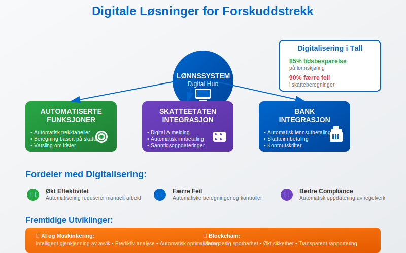
Automatiserte funksjoner:
- Automatisk oppdatering av trekktabeller
- Integrering med Skatteetatens systemer
- Automatisk beregning basert på skattekort
- Digital rapportering gjennom A-meldingen
- Varsling om frister og endringer
7.2 Fremtidige Endringer
Skatteetaten jobber kontinuerlig med å modernisere forskuddstrekksystemet:
Planlagte forbedringer:
- Mer dynamiske trekktabeller
- Bedre integrasjon mellom systemer
- Forenklet rapportering for små bedrifter
- Økt automatisering av korrigeringer
- Forbedret brukeropplevelse i digitale tjenester
Seksjon 8: Praktiske Tips og Beste Praksis
8.1 Rutiner for Forskuddstrekk
Månedlige rutiner:
- Kontroller at alle skattekortet er oppdaterte
- Verifiser trekkberegninger mot trekktabeller
- Dokumenter alle beregninger og beslutninger
- Send A-melding innen fristen
- Innbetal trekket til Skatteetaten i tide
8.2 Vanlige Feil og Hvordan Unngå Dem
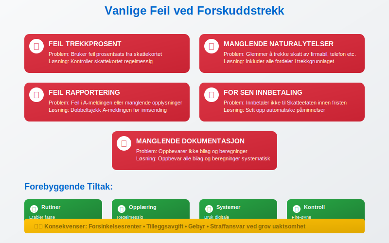
Hyppige feilkilder:
- Feil trekkprosent - Kontroller skattekortet regelmessig
- Manglende trekk av naturalytelser - Inkluder alle fordeler
- Feil rapportering - Dobbeltsjekk A-meldingen før innsending
- For sen innbetaling - Sett opp automatiske påminnelser
- Manglende dokumentasjon - Oppbevar alle bilag og beregninger
8.3 Kontroll og Kvalitetssikring
Kontrollrutiner:
- Månedlig avstemming av trekk mot utbetalinger
- Kvartalsvis gjennomgang av trekkprosenter
- Årlig kontroll mot lønns- og trekkoppgaven
- Regelmessig oppdatering av systemer og tabeller
Konklusjon
Forskuddstrekk er en fundamental del av det norske skattesystemet som sikrer jevn skatteinnbetaling gjennom året. For arbeidsgivere innebærer dette et betydelig ansvar for korrekt beregning, rapportering og innbetaling av skattetrekk på vegne av sine ansatte.
Viktige punkter å huske:
- Forskuddstrekk beregnes av all skattepliktig lønn og ytelser
- Skattekortet bestemmer trekkprosenten som skal anvendes
- Rapportering skjer månedlig gjennom A-meldingen
- Korrekt håndtering krever gode rutiner og systemer
- Feil kan medføre sanksjoner og tilleggsarbeid
- Husk at enkelte måneder har halv skatt, noe som påvirker trekkgrunnlaget.
Ved å følge etablerte rutiner, holde seg oppdatert på regelverket og bruke moderne digitale løsninger, kan bedrifter håndtere forskuddstrekk effektivt og i samsvar med gjeldende regelverk. Dette sikrer både compliance og god økonomistyring i virksomheten.